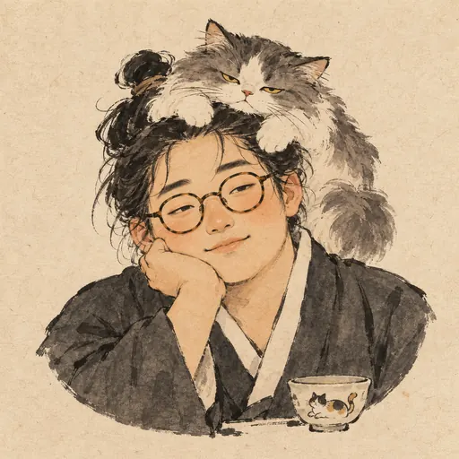
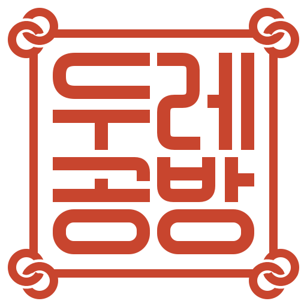
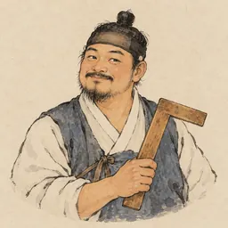
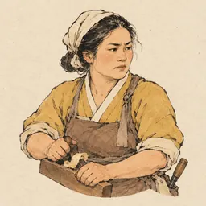
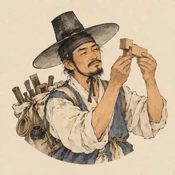
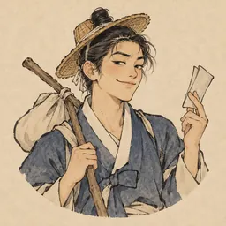
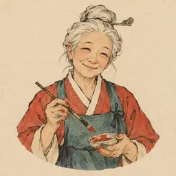
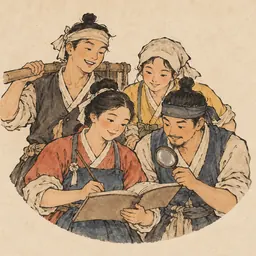
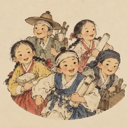

대표 개발자Lead developerLorance Call (소로안 召路安)
불러 모으고(召) 길을 닦습니다(路安). 부르는 건 한 번, 길 닦기는 매일.
Calls people together (召), then paves their road (路安). Calling once, paving daily.

두레공방A small workshop building a remote-access place for your own computers, with a little room for agents.
내 컴퓨터들을 위한 원격 작업 환경을 짓는 작은 공방입니다. 에이전트 자리도 조금 있습니다.
There are more tools on the workbench.
공방에는 다른 도구도 있습니다.
공방 문을 매일 열고 닫는 사람들입니다.
The people who open and close the workshop every day.

불러 모으고(召) 길을 닦습니다(路安). 부르는 건 한 번, 길 닦기는 매일.
Calls people together (召), then paves their road (路安). Calling once, paving daily.

모두 퇴근한 뒤 마지막으로 문을 잠급니다. "그건 PR로 주세요."
Last one out, locks the door. "Send it as a PR."

"거의 다 됐다"를 "다 됐다"로 바꾸는 사람.
Turns "almost done" into "done".

직접 두들겨 본 것만 믿습니다. "여기 틈 있네요."
Trusts only what he has tapped. "There's a gap here."

삿갓 하나로 어디든. 소식은 늘 먼저.
One straw hat, anywhere. Always hears the news first.

"이 기둥엔 주홍이죠." 손끝에도 조금.
"This pillar wants vermilion." A little on her fingertips, too.

돋보기 한 번에 실수 하나. "두 군데만 고치시면 돼요."
One look, one mistake found. "Just two spots to fix."

부르면 뛰어가고, 금방 옵니다. "다녀왔습니다!"
Called, gone, back. "I'm back!"
Our names come from Korean village life, when neighbours worked the fields together, and from the old building crafts.
이름은 이웃이 함께 들일을 하던 한국 마을의 말과 옛 건축 장인들의 말에서 가져왔습니다.